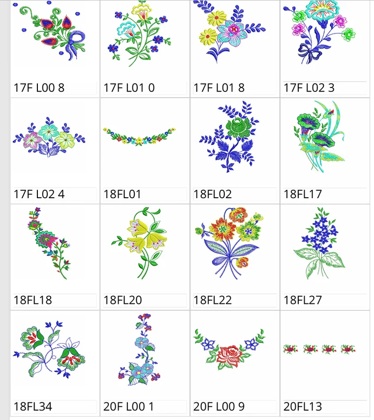
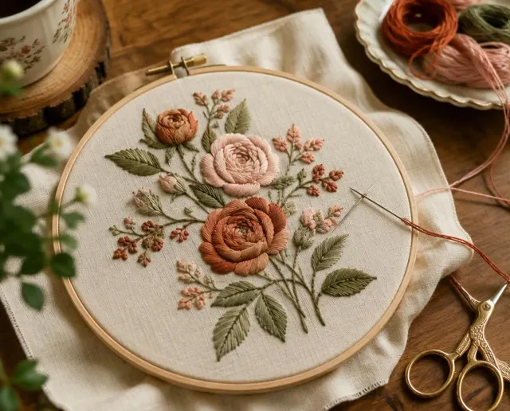
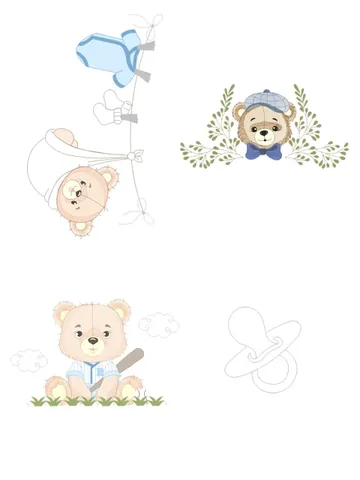
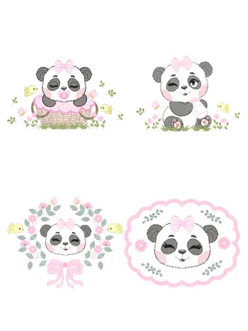
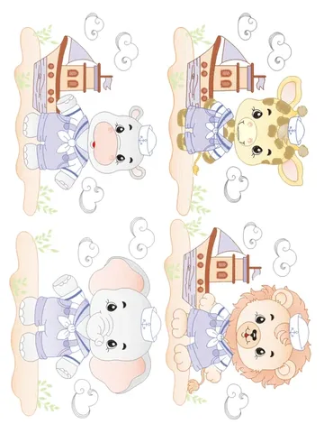
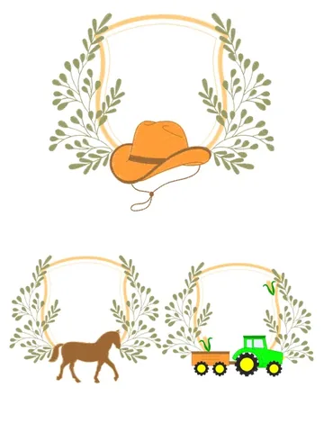
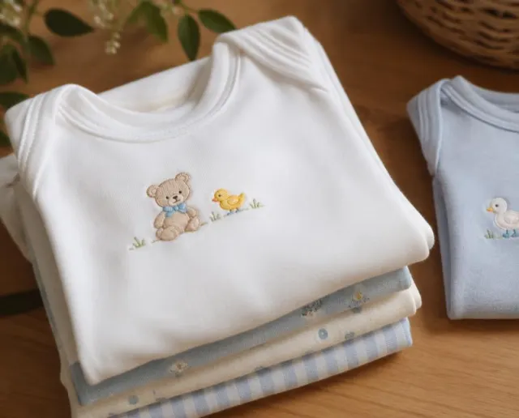

Bono 01
Tabla de precios sugeridos
Una referencia para ponerle precio a tus bordados.
Colección digital de bordados · V2
Elige el diseño, encuentra el formato para tu máquina y empieza a bordar. Una colección organizada para quien borda por placer o para vender.
CONOCER LA COLECCIÓN · US$ 9,90Pago único · acceso de por vida · garantía de 7 días



Una pequeña muestra de los diseños de la colección.
Todo en un solo lugar
Deja de buscar diseños sueltos para cada nuevo proyecto. Ten una colección con diferentes temas, organizada por categoría para encontrar lo que necesitas.

Mira lo que viene en la colección
Del bordado infantil a las flores, frases y temas especiales: siempre hay una nueva posibilidad para crear.


Muestras reales
Diseños ya digitalizados, listos para abrir y bordar.












Incluidos en la V2
Una referencia para ponerle precio a tus bordados.
15 matrices florales más para tus proyectos.

Diseños infantiles y personajes adicionales.

20 etiquetas más para editar e imprimir.

Novedades futuras incluidas en la colección.
Ejemplo de diseños incluidos en la colección.
Colección completa · V2
Más de 4.000 matrices, cinco bonos y una colección para explorar a tu ritmo.
Inversión única
US$ 9,90
Sin mensualidad.
El enlace de pago para este valor aún no está configurado. La compra estará disponible tras configurar el checkout de US$ 9,90.
Preguntas frecuentes
Los archivos están disponibles en los formatos .PES, .DST, .JEF, .EXP, .VP3, .VIP, .HUS, .XXX y .EMD. Comprueba qué formato acepta tu máquina antes de la compra.
Después de la confirmación del pago, el acceso digital se envía al correo indicado en la compra.
Sí. Puedes usar los diseños en piezas bordadas para venta. La reventa de los propios archivos de matrices no está permitida.
Tienes hasta 7 días para solicitar el reembolso, de acuerdo con la garantía ofrecida en la compra.
Una colección para crear más
Explora los diseños, elige tu próximo proyecto y aprovecha todos los bonos de la V2.
VER LA OFERTA DE US$ 9,90